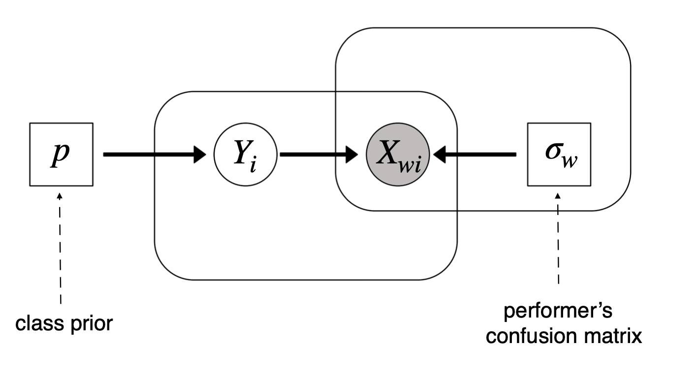

Dans ce rapport, nous allons étudier l’article Regularized Minimax Conditional Entropy for Crowdsourcing(Zhou et al. 2015). Nous allons reprendre certaines parties de leur document qui explique déjà très bien pourquoi la recherche de cette méthode est utile.
Le crowdsourcing présume qu’une foule peut résoudre des problèmes ou accomplir des tâches mieux qu’un individu ou un groupe d’individus avec diverses significations de “mieux” telles que plus rapidement, plus efficacement ou simplement être capable de résoudre tout le problème.
Ces dernières années les services de crowdsourcing ont émergés et les coûts sont devenus de plus en plus moindre. Donc il était facile d’obtenir énormément de données étiquetées à moindre coût. Cependant, les étiquettes ne sont pas toujours de bonnes qualités car les travailleurs ne font pas un travail parfait, parfois par simple manque d’expertise. Alors pour palier à ce problème, plusieurs personnes étiquettent les mêmes items et bien souvent l’étiquette gardée est celle choisie par la majorité. Malheureusement, tous les travailleurs ne sont pas réellement égaux car certains sont plus capables que d’autres et donc le choix à la majorité ne reflète pas forcément la vérité puisque quelques votes seront plus fiables que d’autres. C’est alors que Dawid et Skene ont proposé un modèle permettant de remédier à ce problème.
Cependant cette méthode a ses limites et nous allons voir lesquelles.
Dawid et Skene
Le modèle d’aggregation de Dawid et Skene est un modèle probabiliste qui paramètre le niveau d’expertise des travailleurs avec des matrices de confusions.
On considère un système de crowdsourcing avec des items à classifier par des travailleurs. Chaque travailleur possède une matrice de confusion, il s’agit d’une matrice traduisant la probabilité qu’un travailleur mette tel ou tel item dans telle ou telle classe. Les éléments qui ne sont pas sur la diagonale représentent alors les probabilités que le travailleur n’étiquète pas comme il faut un item. Tandis que ceux présents sur la diagonale représente sa précision à être juste pour chaque classe, c’est-à-dire par exemple la probabilité qu’il a de mettre l’image dans la classe “chat” s’il s’agit bien d’un chat.
On note \(\sigma_w\) la matrice de confusion (matrice d’erreur) de taille \(n_{classes} \times n_{classes}\) , \(Y_i\) la vraie étiquette de l’item \(i\) et \(X_{wi}\) la classe que le travailleur \(w\) a attribué à l’item \(i\). \(p\) est le vecteur de probabilité des classes à priori. On a \(P(X_{wi}=c)=p[c]\). La relation entre ces paramètres est représentée par le modèle suivant :

Dans cette méthode, la performance d’un travailleur (la matrice de confusion) reste la même pour tous les items d’une même classe. Ce n’est pas vrai pour tout car parfois un item est plus dur qu’un autre à étiqueter et donc il est plus probable qu’un travailleur se trompe pour cet item. Et parfois peu importe qui étiquète, l’item peut avoir plus tendance à être rangé dans une classe que dans une autre. C’est pourquoi la méthode du minimax de l’entropie conditionnelle régularisée a été développée pour prendre en compte ce dernier argument.
Notation et principe du minimax
Posons tout d’abord les notations. Soit un groupe de travailleur où chaque travailleur est indexé par \(w\) (worker), un ensemble d’items indexés par \(i\) (item) et un nombre de classes indexées par \(c\) ou \(v\). On utilisera \(v\) dans le cas où il s’agit de la vraie classe associée à l’item. Soit \(x_{wi}\) l’étiquette observée que le travailleur \(w\) a assigné à l’item \(i\) et \(X_{wi}\) la variable aléatoire correspondante.
On note \(Q(Y_i = v)\) la vraie probabilité non-observée que l’item \(i\) soit dans la classe \(v\). On dit que l’étiquette est déterministe lorsque \(Q(Y_i = v)=1\) et \(Q(Y_i = c)=0\) pour tout \(c\neq v\). On note \(P(X_{wi}=c|Y_i=v)\) la probabilité que le traveilleur \(w\) étiquette l’item \(i\) dans la classe \(c\) alors que la vraie classe est \(v\). On cherche à estimer les vraies étiquettes non-observées à partir des résultats trompeurs.
Forme Primale
La première approche développée dans le papier est la suivante : on construit 2 tenseurs à 4 dimensions (\(w, i, c, v\)). Le premier tenseur est un tenseur de confusion empirique, c’est-à-dire qu’il représente la confusion observée du travailleur \(w\) lorsqu’il étiquète l’item \(i\) dans la classe \(c\) au lieu de \(v\). Le deuxième tenseur est un tenseur de confusion expecté, c’est-à-dire qu’il représente la confusion attendue du travailleur \(w\) lorsqu’il étiquète l’item \(i\) dans la classe \(c\) au lieu de \(v\).
Premier tenseur : \[
\hat{\phi}_{wi}(v,c)=Q(Y_i=v)\mathbb{1}(x_{wi}=c)
\]
Deuxième tenseur : \[
\phi_{wi}(v,c)=Q(Y_i=v)P(X_{wi}=c|Y_i=v)
\]
On assume que les étiquettes des items sont indépendantes. L’entropie des étiquettes observées des travailleurs conditionnée par les vraies étiquettes peut s’écrire : \[ H(X|Y)=-\underset{i,v}{\sum}Q(Y_i=v)\underset{w,c}{\sum}P(X_{wi}=c|Y_i=v)\,\text{log}\,P(X_{wi}=c|Y_i=v)\]
On considère d’abord simplement le cas où \(Q\) est donné et l’on cherche à estimer \(P\). Supposons que l’on connait la distribution de \(Q\), on cherche à estimer \(P\) qui génère les étiquettes des travailleurs. Pour ça on cherche à maximiser l’entropie conditionnelle : \[ \underset{P}{\text{max}}\,\,\, H(X|Y)\] avec les contraintes des travailleurs et des items suivantes : \[
\underset{i}{\sum} \big[\phi_{wi}(v,c)-\hat{\phi}_{wi}(v,c)\big]=0, \,\, \forall w,c,v
\]\[
\underset{w}{\sum} \big[\phi_{wi}(v,c)-\hat{\phi}_{wi}(v,c)\big]=0, \,\, \forall i,c,v
\]
et également les contraintes de probabilités : \[\underset{c}{\sum}P(X_{wi}=c|Y_i=v)=1, \,\, \forall w,i,v, \]\[\underset{v}{\sum}Q(Y_i=v)\geq 0,\,\, \forall i, \]\[Q(Y_i=v)\geq0, \,\, \forall i,v\]
Dans le cas où on ne connait pas les distributions \(P\) et \(Q\), on souhaite estimer conjointement les deux par le minimax : \[ \underset{Q}{\text{min}}\,\, \underset{P}{\text{max}} \,\,\, H(X|Y)\] Les contraintes sont les mêmes que précédemment. L’entropie est une sorte de mesure de l’incertain donc minimiser le maximum de l’entropie conditionnelle signifie qu’étant donné les vraies étiquettes, celles donnés par les travailleurs sont les moins aléatoires.
Forme Duale
Le problème peut également s’étendre sous forme duale. Le Lagrangien du problème de maximisation précédent peut être écrit comme suit : \[
L = H(X|Y)+L_\sigma+L_\tau+L_\lambda \,\,\,\,\, \text{avec}
\]\[L_\sigma = \underset{w,v,c}{\sum}\sigma_w(v,c)\underset{i}{\sum}\Big[\phi_{wi}(v,c)-\hat{\phi}_{wi}(v,c)\Big],\]\[L_\tau = \underset{i,v,c}{\sum}\tau_i(v,c)\underset{w}{\sum}\Big[\phi_{wi}(v,c)-\hat{\phi}_{wi}(v,c)\Big],\]\[L_\lambda = \underset{w,i,v}{\sum}\lambda_{wiv}\Big[\underset{k}{\sum}P(X_{wi}=c|Y_i=v)-1\Big]\]
où \(\sigma_w(v,c)\),\(\tau_i(v,c)\) et \(\lambda_{wiv}\) sont les multiplicateurs de Lagrange. Par les conditions KKT on a que \[\frac{\partial L}{\partial P(X_{wi}=c|Y_i=v)}=0\] ce qui implique : \[\text{log}\,P(X_{wi}=c|Y_i=v)=\lambda_{wiv}-1+\sigma_w(v,c)+\tau_i(v,c)\]
On obtient ensuite avec les contraintes : \[P(X_{wi}=c|Y_i=v)=\frac{1}{Z_{wi}}\,\text{exp}[\sigma_w(v,c)+\tau_i(v,c)]\] où \(Z_{wi}=\underset{c}{\sum}\text{exp}[\sigma_w(v,c)+\tau_i(v,c)]\) est le facteur de normalisation.
La matrice \([\sigma_w(v,c)]\) peut être considérée comme la mesure de l’habilité du travailleur \(w\). La \((v,c)\)-ième entrée mesure la probabilité que le travailleur \(w\) étiquète un item choisi aléatoirement dans la classe \(c\) au lieu de la classe \(v\). Et \([\tau_i(v,c)]\) peut être considérée comme la mesure de la difficulté d’un item \(i\). La \((v,c)\)-ième entrée de la matrice mesure la probabilité qu’un item \(i\) de la classe \(v\) soit étiqueté dans la classe \(c\) par un travailleur choisi aléatoirement.
On obtient alors la forme dual du problème de minimax : \[ \underset{\sigma,\tau,Q}{\text{max}}\,\,\,\,\,\underset{i,v}{\sum}Q(Y_i=v)\underset{w}{\sum}\,\text{log}\,P(X_{wi}=x_{wi}|Y_i=v)\]
Pour que ce soit optimal, il faut que la vraie étiquette soit déterministe.
Divergence de Kullback-Leibler
Soit \(P\) et \(Q\), deux distributions de l’espace produit \(X\times Y\). On étend cette distribution \(Q\) défini par \(Q(X_{wi}=x_{wi})=1\), et \(Q(Y)\) reste la même. On étend la distribution de \(P\) avec \(P(X,Y)=\underset{wi}{\prod}P(X_{wi}|Y_i)P(Y_i)\) où \(P(X_{wi}|Y_i)\) est le même que précédemment et \(P(Y)\) est une distribution uniforme sur toutes les classes possibles.
Théorème
Quand les vraies étiquettes sont déterministes, minimiser la divergence de Kullback Leibler de \(Q\) à \(P\), qui est, \[\underset{P,Q}{\text{min}} \Big\{D_{\text{KL}}(Q||P)\,\,=\,\,\underset{X,Y}{\sum}Q(X,Y)\,\text{log}\,\frac{Q(X,Y)}{P(X,Y)} \Big\}\] est équivalent au problème du minimax d’avant.
On ne présentera pas la preuve dans ce document elle se déroule en montrant que :
Par la définition de \(P(X,Y)\), \(P(Y)\) est constant. De plus, lorsque les vraies étiquettes sont déterministes on a que \(\underset{Y}{\sum}Q(Y)\text{log}Q(Y)=0\), ce qui conclut la preuve.
Minimax de l’entropie conditionnelle régularisée
Il faut régulariser la méthode du minimax de l’entropie conditionnelle pour deux raisons principales :
Dans la méthode du minimax décrite avant, on peut seulement générer des étiquettes déterministes alors qu’en pratique les étiquettes probabilistes sont généralement plus utiles. Lorsque la répartition des étiquettes pour un item est presque uniforme sur plusieurs classes, on peut demander plus d’étiquettes pour l’item ou transmettre l’item à un expert externe.
Parfois, le nombre de données n’est pas suffisant pour avoir une distribution continue, donc on peut se retrouver avec des uniformes ou des dirac et donc ce ne sera pas représentatif de la vérité, en tout cas on ne peut pas en être sûre.
Il faudrait alors pénaliser les larges fluctuations, et considérer une régularisation d’entropie sur la vraie distribution inconnue d’étiquettes. Formellement, on régularise de la manière qui suit.
L’entropie de la vraie distribution des étiquettes s’écrit : \[H(Y)\,=\,-\,\underset{i,v}{\sum}\,Q(Y_i=v)\text{log}Q(Y_i=v)\] Pour estimer les vraies étiquettes, on considère : \[\underset{Q}{\text{min}}\,\underset{P}{\text{max}} \, \, H(X|Y)-H(Y)-\frac{1}{\alpha}\Omega(\xi)-\frac{1}{\beta}\Psi(\zeta)\]
avec les contraintes sur les travailleurs et les items suivantes : \[\underset{i}{\sum}\,\big[\phi_{wi}(v,c)-\hat{\phi}_{wi}(v,c)\big] \, = \, \xi_w(v,c), \,\,\, \forall w,
\]\[\underset{w}{\sum}\,\big[\phi_{wi}(v,c)-\hat{\phi}_{wi}(v,c)\big] \, = \, \zeta_i(v,c), \,\,\, \forall i.
\]
et les contraintes de probabilités précédentes. Les fonctions de régularisation \(\Omega\) et \(\Psi\) sont choisies par : \[\Omega(\xi)=\frac{1}{2}\underset{w}{\sum}\underset{v,c}{\sum}[\xi_w(v,c)]^2,
\]\[\Psi(\zeta)=\frac{1}{2}\underset{i}{\sum}\underset{v,c}{\sum}[\zeta_i(v,c)]^2,
\]
Les variables \(\xi_w(v,c)\) et \(\zeta_i(v,c)\) modélisent les possibles fluctuations. À noter que ces variables ne sont pas nécessairement positives. Lorsqu’il y a un grand nombre d’observation, les fluctuations sont approximativement distribuées normalement (théorème centrale limite). C’est pourquoi on introduit des fonctions de régularisations pour pénaliser les fortes fluctuations. L’entropie \(H(Y)\) peut être vue comme pénalisant une large déviation à la distribution uniforme.
où \[\Omega^{*}(\sigma)=\frac{1}{2}\underset{w}{\sum}\underset{v,c}{\sum}[\sigma_w(v,c)]^2,
\]\[\Psi^{*}(\tau)=\frac{1}{2}\underset{i}{\sum}\underset{v,c}{\sum}[\tau_i(v,c)]^2,
\]
Principe de mesure objective
Dans cette section, nous allons voir le principe de mesure objective qui est décrit dans le document initial afin de montrer que le modèle d’étiquetage probabiliste est une conséquence de ce principe. Le principe peut être décrit comme suit :
Une comparaison de la difficulté d’étiquetage entre deux éléments doit être indépendante des travailleurs particuliers impliqués dans la comparaison ; et il devrait également être indépendant des autres éléments qui pourraient également être comparés
Symétriquement, une comparaison de la capacité d’étiquetage entre deux travailleurs devrait être indépendante des éléments particuliers impliqués dans la comparaison ; et il devrait également être indépendant des autres travailleurs qui pourraient également être comparés.
On va maintenant décrire le principe mathématiquement.
On suppose que le travailleur \(w\) a étiqueté les items \(i\) et \(i'\) dans la classe \(v\). On écrit \(E\) l’évènement que “un des deux items est étiqueté \(c\) et l’autre \(v\)”.
\[
E = \Big\{\mathbb{1}(X_{wi=c})+\mathbb{1}(X_{wi'}=c)=1\, , \, \mathbb{1}(X_{wi=v})+\mathbb{1}(X_{wi'}=v)=1\Big\}
\]
On écrit \(A\) l’évènement que l’item \(i\) soit étiqueté en tant que \(c\) et \(i'\) en tant que \(v\).
\[
A = \Big\{X_{wi}=c,X_{wi'}=v\Big\}
\]
On formule maintenant l’exigence 1. du principe. \(P(A|E)\) est indépendant du travailleur \(w\). On note : \[
P(A|E)\,=\,\frac{P(X_{wi}=c|Y_i=v)P(X_{wi'}=v|Y_{i'}=v)}{P(X_{wi}=c|Y_i=v)P(X_{wi'}=v|Y_{i'}=v)+P(X_{wi}=v|Y_i=v)P(X_{wi'}=c|Y_{i'}=v)}
\]
Ainsi \(P(A|E)\) est indépendant du travailleur \(w\) si et seulement si :
Le modèle d’étiquetage probabiliste suit immédiatement. Il est facile de vérifier qu’en raison de la symétrie entre la difficulté de l’item et la capacité du travailleur, nous pouvons formuler l’exigence 2. pour obtenir le même résultat. Ainsi, les deux exigences sont en fait redondantes.
Implementation
Description de l’algorithme
Algorithme : Minimax de l’entropie conditionnelle régularisée pour le crowdsourcing
On va s’attaquer à l’implémentation de la méthode pour résoudre le problème sous forme dual. On initialise d’abord l’estimation des étiquettes par aggregation des votes dans l’équation : \[Q(Y_i=v) \propto \underset{w}{\sum}\mathbb{1}(x_{wi}=v)\]
Ensuite, pour chaque itération, étant donné les estimations actuelles des étiquettes, mettre à jour l’estimation des matrices de confusion des travailleurs et des items en résolvant le problème d’optimisation : \[\{\sigma, \tau\} \, = \, \text{arg}\, \underset{\sigma, \tau}{\text{max}}\, \underset{w,i,v}{\sum} Q(Y_i=v)\text{log}\, P(X_{wi}=x_{wi}|Y_i=v)-\alpha\Omega^{*}(\sigma)-\beta\Psi^{*}(\tau) \]
et, étant donnée l’estimation actuelle des matrices de confusion des travailleurs et des items, mettre à jour les estimations des étiquettes par la formule fermée : \[Q(Y_i=v)\propto \underset{w}{\prod}P(X_{wi}=x_{wi}|Y_i=v)\]
ce qui est la même chose qu’appliquer la règle de Bayes avec un prior uniforme. Le problème d’optimisation précédent est fortement convexe et lisse. Plusieurs algorithmes peuvent être appliqués. On va utiliser la méthode de montée de gradient. Pour des étiquettes multiclasses, les gradients sont calculés par (calcul en Annexe) : \[\frac{\partial F}{\partial \sigma_w(v,c)} = \sum_i Q(Y_i=v)[\mathbb{1}(x_{wi}=c)-P(X_{wi}=c|Y_i=v)]-\alpha\sigma_w(v,c),\]\[\frac{\partial F}{\partial \tau_i(v,c)} = \sum_w Q(Y_i=v)[\mathbb{1}(x_{wi}=c)-P(X_{wi}=c|Y_i=v)]-\beta\tau_i(v,c),\]
Concernant les valeurs de \(\alpha\) et \(\beta\), nous avons utilisé les formules proposées dans l’article étudié qui sont les suivantes :
\[
\alpha = \gamma \times (\text{nombre de classes})^2
\]
où \(\gamma \in \{2^{-2}, 2^{-1}, 2^0, 2^1, 2^2\}\)\[
\beta = \frac{\text{nombre de label par travailleur}}{\text{nombre de label par item}} \times \alpha
\]
Il peut exister des cas où les travailleurs ne votent pas tous pour le même nombre d’item et que chaque item ne possède pas le même nombre de label. Nous avons donc fait une moyenne.
Implémentation de l’algorithme
Pour déterminer la distribution empirique des vraies étiquettes, j’ai réalisé une fonction qui, à partir des données observées, renvoie la distribution exacte de ces données. Voici le code :
Voir le code
def dist_Q(data, n_classes):""" Calculate the distribution of the labels given by the observation Parameters: - data (dict): A dict with worker's answers. - n_classes (int): The number of classes. Returns: - dict: A dictionary containing the distribution of Q """ d = {}for i inrange(len(worker_json(data))): vec = get_vec(list(worker_json(data)[f"{i}"].values()), n_classes) d[f"{i}"] = {}for c inrange(n_classes): d[f"{i}"][f"{c}"] = vec[c]return d
Ensuite nous cherchons à optimiser \(\sigma\) et \(\tau\), qui sont tous les deux des tenseurs, à l’aide d’une montée de gradient. Pour cela nous devons tout d’abord calculer les gradients de ces deux derniers. Chaque tenseur à son propre code mais les deux sont très similaires, nous montrerons que le code pour calculer le gradient de \(\sigma\).
Voir le code
def gradient_sigma(n_workers, n_classes, n_items, data, sigma, tau, Q):""" Computes the gradient of the sigma parameter in a multi-class \ classification problem. Parameters: n_workers (int): The number of workers. n_classes (int): The number of classes. n_items (int): The number of items. data (dict): The data for the classification problem. sigma (torch.Tensor): The sigma parameter. Returns: DF_sigma (torch.Tensor): The gradient of the sigma parameter. """ alpha = params(data, n_classes)[0] DF_sigma = torch.zeros((n_workers, n_classes, n_classes))for w inrange(n_workers):for v inrange(n_classes):for c inrange(n_classes): DFc =0 ind =0for i inrange(n_items):# expo = 0if data[f"{w}"][f"{i}"] == c: ind =1else: ind =0 k = data[f"{w}"][f"{i}"] st = sigma[w]+tau[i] P = torch.softmax(st, dim=1) DFc += Q[f"{i}"][f"{v}"]*(ind - P[v, k]) DF_sigma[w, v, c] = DFc-alpha*sigma[w, v, c]return DF_sigma
Maintenant que les gradients sont calculés il nous suffit de faire les montées de gradient associées. Les paramètres de la montée sont par défaut learning_rate=0.01 et max_iteration=10 mais ils peuvent être changés.
Voir le code
def gradient_ascent(n_workers, n_classes, n_items, data, sigma, tau, Q, learning_rate=0.01, max_iterations=10):""" Perform gradient ascent optimization. Args: n_workers (int): Number of workers. n_classes (int): Number of classes. n_items (int): Number of items. data (dict): Data observed. sigma (torch.Tensor): Sigma parameter. learning_rate (float): Learning rate. max_iterations (int): Maximum number of iterations. Returns: sigma, tau (float): Sigma and tau values. """for _ inrange(max_iterations): sigma_up = sigma + learning_rate *\ gradient_sigma(n_workers, n_classes, n_items, data, sigma, tau, Q) tau_up = tau + learning_rate *\ gradient_tau(n_workers, n_classes, n_items, data, sigma, tau, Q) sigma = sigma_up tau = tau_upreturn sigma_up, tau_up
Une fois nos tenseurs optimiisés nous allons les utiliser afin de mettre à jour la distribution \(Q\). Les travailleurs pouvant faire des erreurs, ce code nous permet d’obtenir une distribution plus vraie au fur et à mesure des étapes.
Voir le code
def update_Q(data, n_workers, n_classes, n_items, sigma, tau):""" Update Q. Args: data (dict): Data for optimization. n_workers (int): Number of workers. n_classes (int): Number of classes. n_items (int): Number of items. sigma (tensor): Sigma tensor. tau (tensor): Tau tensor. """ Q = {}for i inrange(n_items): Q[f"{i}"] = {} Q_list = []for v inrange(n_classes): S =0for w inrange(n_workers): k = data[f"{w}"][f"{i}"] st = sigma[w]+tau[i] sumexp = torch.logsumexp(st, dim=1) S = S + st[v, k].item() - sumexp[v].item() Q[f"{i}"][f"{v}"] = np.exp(S) Q_list.append(Q[f"{i}"][f"{v}"])for v1 inrange(n_classes): Q[f"{i}"][f"{v1}"] = Q[f"{i}"][f"{v1}"]/np.sum(Q_list)return Q
Afin d’optimiser au maximum la distribution de \(Q\) il nous faut répéter ce code plusieurs fois. C’est-à-dire qu’on repart des calculs des gradients de \(\sigma\) et \(\tau\) mais cette fois en utilisant la nouvelle distribution pour \(Q\) que l’on a obtenu, ainsi de suite.
Exemple
Bluebirds
Nous avons ensuite réaliser plusieurs exemples afin de tester notre code. Tout d’abord nous avons utiliser le jeu de données bluebirds(Welinder, n.d.), il a fallu dans un premier temps le travailler pour le mettre dans un format adéquat au code. Tout est dans le fichier script_test.py.
Nous avons choisi une initialisation de \(\sigma\) et \(\tau\) simples, nous avons pris des tenseurs de zéros. On choisit de réaliser seulement 10 itérations car cela converge assez vite donc on voit déjà les résultats apparaitrent.
On obtient suite à ce code des résultats qui correspondent plutôt bien à la réalite. Pour vérifier cela nous allons calculer l’erreur. Le code est adapté pour cet exemple, nous n’avons pas réalisé un code général, ce n’était pas le but principal. Suite à cela nous obtenons un taux d’erreur de \(15\%\) ce qui est vraiment pas mal par rapport à ce qui a été trouvé dans l’article. Nous ne saurons pas dire pourquoi notre taux est plus faible que le leur (qui est de \(36\%\)).
Hammer/Spammer
Nous avons ensuite réalisé un deuxième exemple pour nous conforter dans l’utilisation du code. Pour cela nous avons utiliser la fonction simulate du package peerannot(Lefort, n.d.) qui nous permet d’obtenir un jeu de données avec les réponses de travailleurs sur un certain nombres d’items et de classes.
Nous avons générer des données avec 10 travailleurs, 100 items et 5 classes. \(\sigma\) et \(\tau\) sont initialisés avec des uns cette fois. Le choix de l’initialisation est un peu arbitraire mais on préviligie les cas simples. Il a également fallu ré-arranger les données car le dictionnaire est trié dans l’ordre “item-worker-label” et pour notre code il faut l’ordre “worker-item-label”. Pour cela nous avons utiliser la fonction item_json dans le fichier annex_def.py.
Le code est similaire au précédent. Nous allons, à présent, calculer le taux d’erreur. Le code est également pour ce jeu-ci donc pas général. Les données étant déjà presque parfaites (peu de personne se trompe), on obtient un taux d’erreur de \(0\%\). C’est surprenant mais pas étonnant car les travailleurs ont quasiment tous donnés les bonnes réponses.
Conclusion
Nous avons pu remarquer que le code réalisé nous donne de très bons résultats dans le cas de nos exemples. Ce code a néanmoins plusieurs limites. Tout d’abord lorsqu’il y a beaucoup de données le code est très chronophage à cause des nombreuses boucles. Cela peut donc être amélioré. De plus, les données que nous pouvons utiliser pour ce code sont seulement celles où tous les travailleurs ont voté pour tous les items ce qui n’est pas toujours le cas dans la vie. Nous avons eu la chance d’avoir des jeux de données pouvant tester notre code mais certains jeux ne passeront pas.
On cherche à calculer \(\frac{\partial F}{\partial \sigma_w(v,c)}\) et \(\frac{\partial F}{\partial \tau_i(v,c)}\). Commençons d’abord par dériver par rapport à \(\sigma_w(v,c)\) et nous verrons que c’est le même calcul pour \(\tau_i(v,c)\)
Posons \(u=Q(Y_i=v)\) et \(v=\text{log}\Big[\frac{\text{exp}(\sigma_w(v,x_{wi})+\tau_i(v,x_{wi}))}{\underset{c}{\sum}\text{exp}(\sigma_w(v,c)+\tau_i(v,c))}\Big]\)
Donc : \(u'=0\) et \(v'\) a été calculé précédemment
Pour \(\alpha\frac{1}{2}\underset{w}{\sum}\underset{v,c}{\sum}\big[\sigma_w(v,c)\big]^2\) on obtient \(\alpha\sigma_w(v,c)\) car on dérive par rapport à \(\sigma_w(v,c)\) et donc la somme est nulle sauf pour les indices par lesquels on dérive et \(\Big(\beta\frac{1}{2}\underset{i}{\sum}\underset{v,c}{\sum}\big[\tau_i(v,c)\big]^2\Big)'=0\)
Zhou, Dengyong, Qiang Liu, John C. Platt, Christopher Meek, and Nihar B. Shah. 2015. “Regularized Minimax Conditional Entropy for Crowdsourcing.”https://arxiv.org/abs/1503.07240.
Source Code
---title: "Minimax de l'entropie conditionnelle régularisée pour le crowdsourcing"title-block-banner: trueformat: html: code-fold: true code-tools: true theme: mintytoc: truetoc-depth: 3toc-title: "Sommaire"bibliography: biblio.bibauthor: - name: Anne Bernarddate: 2023-07-27---## Introduction <a name="Introduction"></a> Dans ce rapport, nous allons étudier l'article *Regularized Minimax Conditional Entropy for Crowdsourcing* [@zhou2015regularized]. Nous allons reprendre certaines parties de leur document qui explique déjà très bien pourquoi la recherche de cette méthode est utile. Le crowdsourcing présume qu'une foule peut résoudre des problèmes ou accomplir des tâches mieux qu'un individu ou un groupe d'individus avec diverses significations de "mieux" telles que plus rapidement, plus efficacement ou simplement être capable de résoudre tout le problème. Ces dernières années les services de crowdsourcing ont émergés et les coûts sont devenus de plus en plus moindre. Donc il était facile d'obtenir énormément de données étiquetées à moindre coût. Cependant, les étiquettes ne sont pas toujours de bonnes qualités car les travailleurs ne font pas un travail parfait, parfois par simple manque d'expertise. Alors pour palier à ce problème, plusieurs personnes étiquettent les mêmes items et bien souvent l'étiquette gardée est celle choisie par la majorité. Malheureusement, tous les travailleurs ne sont pas réellement égaux car certains sont plus capables que d'autres et donc le choix à la majorité ne reflète pas forcément la vérité puisque quelques votes seront plus fiables que d'autres. C'est alors que Dawid et Skene ont proposé un modèle permettant de remédier à ce problème. Cependant cette méthode a ses limites et nous allons voir lesquelles.## Dawid et Skene <a name="Dawid et Skene"></a> Le modèle d'aggregation de Dawid et Skene est un modèle probabiliste qui paramètre le niveau d'expertise des travailleurs avec des matrices de confusions. On considère un système de crowdsourcing avec des items à classifier par des travailleurs. Chaque travailleur possède une matrice de confusion, il s'agit d'une matrice traduisant la probabilité qu'un travailleur mette tel ou tel item dans telle ou telle classe. Les éléments qui ne sont pas sur la diagonale représentent alors les probabilités que le travailleur n'étiquète pas comme il faut un item. Tandis que ceux présents sur la diagonale représente sa précision à être juste pour chaque classe, c’est-à-dire par exemple la probabilité qu’il a de mettre l’image dans la classe "chat" s’il s’agit bien d’un chat. On note $\sigma_w$ la matrice de confusion (matrice d'erreur) de taille $n_{classes} \times n_{classes}$ , $Y_i$ la vraie étiquette de l'item $i$ et $X_{wi}$ la classe que le travailleur $w$ a attribué à l'item $i$. $p$ est le vecteur de probabilité des classes à priori. On a $P(X_{wi}=c)=p[c]$. La relation entre ces paramètres est représentée par le modèle suivant : <center><imgsrc="schema1.png"width="500"> Dans cette méthode, la performance d’un travailleur (la matrice de confusion) reste la même pour tous les items d’une même classe. Ce n’est pas vrai pour tout car parfois un item est plus dur qu’un autre à étiqueter et donc il est plus probable qu’un travailleur se trompe pour cet item. Et parfois peu importe qui étiquète, l’item peut avoir plus tendance à être rangé dans une classe que dans une autre. C'est pourquoi la méthode du minimax de l'entropie conditionnelle régularisée a été développée pour prendre en compte ce dernier argument. ## Notation et principe du minimax <a name="Notation et principe du minimax"></a> Posons tout d'abord les notations. Soit un groupe de travailleur où chaque travailleur est indexé par $w$ (worker), un ensemble d'items indexés par $i$ (item) et un nombre de classes indexées par $c$ ou $v$. On utilisera $v$ dans le cas où il s'agit de la vraie classe associée à l'item. Soit $x_{wi}$ l'étiquette observée que le travailleur $w$ a assigné à l'item $i$ et $X_{wi}$ la variable aléatoire correspondante. On note $Q(Y_i = v)$ la vraie probabilité non-observée que l'item $i$ soit dans la classe $v$. On dit que l'étiquette est déterministe lorsque $Q(Y_i = v)=1$ et $Q(Y_i = c)=0$ pour tout $c\neq v$. On note $P(X_{wi}=c|Y_i=v)$ la probabilité que le traveilleur $w$ étiquette l'item $i$ dans la classe $c$ alors que la vraie classe est $v$. On cherche à estimer les vraies étiquettes non-observées à partir des résultats trompeurs. ### Forme Primale <a name="Forme Primale"></a> La première approche développée dans le papier est la suivante : on construit 2 tenseurs à 4 dimensions ($w, i, c, v$). Le premier tenseur est un tenseur de confusion empirique, c'est-à-dire qu'il représente la confusion observée du travailleur $w$ lorsqu'il étiquète l'item $i$ dans la classe $c$ au lieu de $v$. Le deuxième tenseur est un tenseur de confusion expecté, c'est-à-dire qu'il représente la confusion attendue du travailleur $w$ lorsqu'il étiquète l'item $i$ dans la classe $c$ au lieu de $v$. Premier tenseur : $$\hat{\phi}_{wi}(v,c)=Q(Y_i=v)\mathbb{1}(x_{wi}=c)$$Deuxième tenseur : $$\phi_{wi}(v,c)=Q(Y_i=v)P(X_{wi}=c|Y_i=v)$$ On assume que les étiquettes des items sont indépendantes. L'entropie des étiquettes observées des travailleurs conditionnée par les vraies étiquettes peut s'écrire : $$ H(X|Y)=-\underset{i,v}{\sum}Q(Y_i=v)\underset{w,c}{\sum}P(X_{wi}=c|Y_i=v)\,\text{log}\,P(X_{wi}=c|Y_i=v)$$On considère d'abord simplement le cas où $Q$ est donné et l'on cherche à estimer $P$. Supposons que l'on connait la distribution de $Q$, on cherche à estimer $P$ qui génère les étiquettes des travailleurs. Pour ça on cherche à maximiser l'entropie conditionnelle : $$ \underset{P}{\text{max}}\,\,\, H(X|Y)$$ avec les contraintes des travailleurs et des items suivantes :$$\underset{i}{\sum} \big[\phi_{wi}(v,c)-\hat{\phi}_{wi}(v,c)\big]=0, \,\, \forall w,c,v $$$$\underset{w}{\sum} \big[\phi_{wi}(v,c)-\hat{\phi}_{wi}(v,c)\big]=0, \,\, \forall i,c,v$$et également les contraintes de probabilités : $$\underset{c}{\sum}P(X_{wi}=c|Y_i=v)=1, \,\, \forall w,i,v, $$$$\underset{v}{\sum}Q(Y_i=v)\geq 0,\,\, \forall i, $$$$Q(Y_i=v)\geq0, \,\, \forall i,v$$ Dans le cas où on ne connait pas les distributions $P$ et $Q$, on souhaite estimer conjointement les deux par le minimax : $$ \underset{Q}{\text{min}}\,\, \underset{P}{\text{max}} \,\,\, H(X|Y)$$ Les contraintes sont les mêmes que précédemment. L'entropie est une sorte de mesure de l'incertain donc minimiser le maximum de l'entropie conditionnelle signifie qu'étant donné les vraies étiquettes, celles donnés par les travailleurs sont les moins aléatoires.### Forme Duale <a name="Forme Duale"></a> Le problème peut également s'étendre sous forme duale. Le Lagrangien du problème de maximisation précédent peut être écrit comme suit : $$L = H(X|Y)+L_\sigma+L_\tau+L_\lambda \,\,\,\,\, \text{avec}$$$$L_\sigma = \underset{w,v,c}{\sum}\sigma_w(v,c)\underset{i}{\sum}\Big[\phi_{wi}(v,c)-\hat{\phi}_{wi}(v,c)\Big],$$$$L_\tau = \underset{i,v,c}{\sum}\tau_i(v,c)\underset{w}{\sum}\Big[\phi_{wi}(v,c)-\hat{\phi}_{wi}(v,c)\Big],$$$$L_\lambda = \underset{w,i,v}{\sum}\lambda_{wiv}\Big[\underset{k}{\sum}P(X_{wi}=c|Y_i=v)-1\Big]$$\noindent où $\sigma_w(v,c)$,$\tau_i(v,c)$ et $\lambda_{wiv}$ sont les multiplicateurs de Lagrange. Par les conditions KKT on a que $$\frac{\partial L}{\partial P(X_{wi}=c|Y_i=v)}=0$$ ce qui implique :$$\text{log}\,P(X_{wi}=c|Y_i=v)=\lambda_{wiv}-1+\sigma_w(v,c)+\tau_i(v,c)$$\noindent On obtient ensuite avec les contraintes : $$P(X_{wi}=c|Y_i=v)=\frac{1}{Z_{wi}}\,\text{exp}[\sigma_w(v,c)+\tau_i(v,c)]$$où $Z_{wi}=\underset{c}{\sum}\text{exp}[\sigma_w(v,c)+\tau_i(v,c)]$ est le facteur de normalisation. La matrice $[\sigma_w(v,c)]$ peut être considérée comme la mesure de l'habilité du travailleur $w$. La $(v,c)$-ième entrée mesure la probabilité que le travailleur $w$ étiquète un item choisi aléatoirement dans la classe $c$ au lieu de la classe $v$. Et $[\tau_i(v,c)]$ peut être considérée comme la mesure de la difficulté d'un item $i$. La $(v,c)$-ième entrée de la matrice mesure la probabilité qu'un item $i$ de la classe $v$ soit étiqueté dans la classe $c$ par un travailleur choisi aléatoirement. On obtient alors la forme dual du problème de minimax : $$ \underset{\sigma,\tau,Q}{\text{max}}\,\,\,\,\,\underset{i,v}{\sum}Q(Y_i=v)\underset{w}{\sum}\,\text{log}\,P(X_{wi}=x_{wi}|Y_i=v)$$Pour que ce soit optimal, il faut que la vraie étiquette soit déterministe.### Divergence de Kullback-Leibler <a name="Divergence de Kullback-Leibler"></a> Soit $P$ et $Q$, deux distributions de l'espace produit $X\times Y$. On étend cette distribution $Q$ défini par $Q(X_{wi}=x_{wi})=1$, et $Q(Y)$ reste la même. On étend la distribution de $P$ avec $P(X,Y)=\underset{wi}{\prod}P(X_{wi}|Y_i)P(Y_i)$ où $P(X_{wi}|Y_i)$ est le même que précédemment et $P(Y)$ est une distribution uniforme sur toutes les classes possibles. ::: {.callout-important icon=false}## Théorème Quand les vraies étiquettes sont déterministes, minimiser la divergence de Kullback Leibler de $Q$ à $P$, qui est, $$\underset{P,Q}{\text{min}} \Big\{D_{\text{KL}}(Q||P)\,\,=\,\,\underset{X,Y}{\sum}Q(X,Y)\,\text{log}\,\frac{Q(X,Y)}{P(X,Y)} \Big\}$$est équivalent au problème du minimax d'avant. ::: On ne présentera pas la preuve dans ce document elle se déroule en montrant que :$$\begin{equation}\begin{split}D_{KL}(Q||P)\,\, = \,\, &-\underset{i,v}{\sum}Q(Y_i=v)\underset{w,c}{\sum}P(X_{wi}=c | Y_i=v)\text{log}P(X_{wi}=c|Y_i=v)+ \\& \underset{Y}{\sum}Q(Y\text{log}Q(Y)-\text{log}P(Y))\end{split}\end{equation}$$Par la définition de $P(X,Y)$, $P(Y)$ est constant. De plus, lorsque les vraies étiquettes sont déterministes on a que $\underset{Y}{\sum}Q(Y)\text{log}Q(Y)=0$, ce qui conclut la preuve. ### Minimax de l'entropie conditionnelle régularisée <a name="Minimax de l'entropie conditionnelle régularisée"></a> Il faut régulariser la méthode du minimax de l'entropie conditionnelle pour deux raisons principales : \newline* Dans la méthode du minimax décrite avant, on peut seulement générer des étiquettes déterministes alors qu'en pratique les étiquettes probabilistes sont généralement plus utiles. Lorsque la répartition des étiquettes pour un item est presque uniforme sur plusieurs classes, on peut demander plus d'étiquettes pour l'item ou transmettre l'item à un expert externe. \newline* Parfois, le nombre de données n'est pas suffisant pour avoir une distribution continue, donc on peut se retrouver avec des uniformes ou des dirac et donc ce ne sera pas représentatif de la vérité, en tout cas on ne peut pas en être sûre. Il faudrait alors pénaliser les larges fluctuations, et considérer une régularisation d'entropie sur la vraie distribution inconnue d'étiquettes. Formellement, on régularise de la manière qui suit.L'entropie de la vraie distribution des étiquettes s'écrit : $$H(Y)\,=\,-\,\underset{i,v}{\sum}\,Q(Y_i=v)\text{log}Q(Y_i=v)$$Pour estimer les vraies étiquettes, on considère : $$\underset{Q}{\text{min}}\,\underset{P}{\text{max}} \, \, H(X|Y)-H(Y)-\frac{1}{\alpha}\Omega(\xi)-\frac{1}{\beta}\Psi(\zeta)$$avec les contraintes sur les travailleurs et les items suivantes : $$\underset{i}{\sum}\,\big[\phi_{wi}(v,c)-\hat{\phi}_{wi}(v,c)\big] \, = \, \xi_w(v,c), \,\,\, \forall w,$$$$\underset{w}{\sum}\,\big[\phi_{wi}(v,c)-\hat{\phi}_{wi}(v,c)\big] \, = \, \zeta_i(v,c), \,\,\, \forall i.$$\noindent et les contraintes de probabilités précédentes. Les fonctions de régularisation $\Omega$ et $\Psi$ sont choisies par :$$\Omega(\xi)=\frac{1}{2}\underset{w}{\sum}\underset{v,c}{\sum}[\xi_w(v,c)]^2,$$$$\Psi(\zeta)=\frac{1}{2}\underset{i}{\sum}\underset{v,c}{\sum}[\zeta_i(v,c)]^2,$$Les variables $\xi_w(v,c)$ et $\zeta_i(v,c)$ modélisent les possibles fluctuations. À noter que ces variables ne sont pas nécessairement positives. Lorsqu'il y a un grand nombre d'observation, les fluctuations sont approximativement distribuées normalement (théorème centrale limite). C'est pourquoi on introduit des fonctions de régularisations pour pénaliser les fortes fluctuations. L'entropie $H(Y)$ peut être vue comme pénalisant une large déviation à la distribution uniforme. On obtient ensuite la forme duale :$$\underset{\sigma,\tau,Q}{\text{max}} \,\,\,\, \underset{i,v}{\sum}Q(Y_i=v)\,\underset{w}{\sum}\text{log}\,P(X_{wi}=x_{wi}|Y_i=v)+H(Y)-\alpha\Omega^{*}(\sigma)-\beta\Psi^{*}(\tau)$$où $$\Omega^{*}(\sigma)=\frac{1}{2}\underset{w}{\sum}\underset{v,c}{\sum}[\sigma_w(v,c)]^2,$$$$\Psi^{*}(\tau)=\frac{1}{2}\underset{i}{\sum}\underset{v,c}{\sum}[\tau_i(v,c)]^2,$$### Principe de mesure objective <a name="Principe de mesure objective"></a> Dans cette section, nous allons voir le principe de mesure objective qui est décrit dans le document initial afin de montrer que le modèle d'étiquetage probabiliste est une conséquence de ce principe. Le principe peut être décrit comme suit : (@) Une comparaison de la difficulté d'étiquetage entre deux éléments doit être indépendante des travailleurs particuliers impliqués dans la comparaison ; et il devrait également être indépendant des autres éléments qui pourraient également être comparés(@) Symétriquement, une comparaison de la capacité d'étiquetage entre deux travailleurs devrait être indépendante des éléments particuliers impliqués dans la comparaison ; et il devrait également être indépendant des autres travailleurs qui pourraient également être comparés. On va maintenant décrire le principe mathématiquement.On suppose que le travailleur $w$ a étiqueté les items $i$ et $i'$ dans la classe $v$. On écrit $E$ l'évènement que "un des deux items est étiqueté $c$ et l'autre $v$".$$E = \Big\{\mathbb{1}(X_{wi=c})+\mathbb{1}(X_{wi'}=c)=1\, , \, \mathbb{1}(X_{wi=v})+\mathbb{1}(X_{wi'}=v)=1\Big\}$$On écrit $A$ l'évènement que l'item $i$ soit étiqueté en tant que $c$ et $i'$ en tant que $v$.$$A = \Big\{X_{wi}=c,X_{wi'}=v\Big\}$$On formule maintenant l'exigence 1. du principe. $P(A|E)$ est indépendant du travailleur $w$. On note : $$P(A|E)\,=\,\frac{P(X_{wi}=c|Y_i=v)P(X_{wi'}=v|Y_{i'}=v)}{P(X_{wi}=c|Y_i=v)P(X_{wi'}=v|Y_{i'}=v)+P(X_{wi}=v|Y_i=v)P(X_{wi'}=c|Y_{i'}=v)}$$Ainsi $P(A|E)$ est indépendant du travailleur $w$ si et seulement si :$$\frac{P(X_{wi}=c|Y_i=v)P(X_{wi'}=v|Y_{i'}=v)}{P(X_{wi}=v|Y_i=v)P(X_{wi'}=c|Y_{i'}=v)}$$est indépendant du traveilleur $w$. En d'autres termes, en prenant un autre travailleur $w'$ arbitrairement, on devrait avoir : $$\frac{P(X_{wi}=c|Y_i=v)P(X_{wi'}=v|Y_{i'}=v)}{P(X_{wi}=v|Y_i=v)P(X_{wi'}=c|Y_{i'}=v)}=\frac{P(X_{w'i}=c|Y_i=v)P(X_{w'i'}=v|Y_{i'}=v)}{P(X_{w'i}=v|Y_i=v)P(X_{w'i'}=c|Y_{i'}=v)}$$Sans perte de généralite, on choisit $w'=0$ et $i'=0$ comme références fixes. Donc, $$\frac{P(X_{wi}=c|Y_i=v)}{P(X_{wi}=v|Y_i=v)}=\frac{P(X_{w0}=c|Y_0=v)P(X_{0i}=v|Y_{i}=v)}{P(X_{w0}=v|Y_0=v)P(X_{0i}=c|Y_{i}=v)}$$On peut alors écrire : $$P(X_{w0}=c|Y_0=v)=\text{exp}[\sigma_w(v,c)]\,,\,\,\, P(X_{0i}=c|Y_i=v)=\text{exp}[\tau_i(v,c)]$$Le modèle d'étiquetage probabiliste suit immédiatement. Il est facile de vérifier qu'en raison de la symétrie entre la difficulté de l'item et la capacité du travailleur, nous pouvons formuler l'exigence 2. pour obtenir le même résultat. Ainsi, les deux exigences sont en fait redondantes.## Implementation <a name="Implementation"></a>### Description de l'algorithme <a name="Description de l'algorithme"></a>::: {.callout-note icon=false}## Algorithme : Minimax de l'entropie conditionnelle régularisée pour le crowdsourcing$\bf{input:}$ $\{x_{wi}\},\alpha, \beta$$\bf{initialize:}$ $$Q(Y_i=v) \propto \underset{w}{\sum}\mathbb{1}(x_{wi}=v)$$$\bf{repeat:}$$$\{\sigma, \tau\} \, = \, \text{arg}\, \underset{\sigma, \tau}{\text{max}}\, \underset{w,i,v}{\sum} Q(Y_i=v)\text{log}\, P(X_{wi}=x_{wi}|Y_i=v)-\alpha\Omega^{*}(\sigma)-\beta\Psi^{*}(\tau) $$$$Q(Y_i=v)\propto \underset{w}{\prod}P(X_{wi}=x_{wi}|Y_i=v)$$$\bf{output:}$ $Q$::: On va s'attaquer à l'implémentation de la méthode pour résoudre le problème sous forme dual. On initialise d'abord l'estimation des étiquettes par aggregation des votes dans l'équation : $$Q(Y_i=v) \propto \underset{w}{\sum}\mathbb{1}(x_{wi}=v)$$Ensuite, pour chaque itération, étant donné les estimations actuelles des étiquettes, mettre à jour l'estimation des matrices de confusion des travailleurs et des items en résolvant le problème d'optimisation : $$\{\sigma, \tau\} \, = \, \text{arg}\, \underset{\sigma, \tau}{\text{max}}\, \underset{w,i,v}{\sum} Q(Y_i=v)\text{log}\, P(X_{wi}=x_{wi}|Y_i=v)-\alpha\Omega^{*}(\sigma)-\beta\Psi^{*}(\tau) $$et, étant donnée l'estimation actuelle des matrices de confusion des travailleurs et des items, mettre à jour les estimations des étiquettes par la formule fermée : $$Q(Y_i=v)\propto \underset{w}{\prod}P(X_{wi}=x_{wi}|Y_i=v)$$ce qui est la même chose qu'appliquer la règle de Bayes avec un prior uniforme. Le problème d'optimisation précédent est fortement convexe et lisse. Plusieurs algorithmes peuvent être appliqués. On va utiliser la méthode de montée de gradient. Pour des étiquettes multiclasses, les gradients sont calculés par (calcul en Annexe) :$$\frac{\partial F}{\partial \sigma_w(v,c)} = \sum_i Q(Y_i=v)[\mathbb{1}(x_{wi}=c)-P(X_{wi}=c|Y_i=v)]-\alpha\sigma_w(v,c),$$$$\frac{\partial F}{\partial \tau_i(v,c)} = \sum_w Q(Y_i=v)[\mathbb{1}(x_{wi}=c)-P(X_{wi}=c|Y_i=v)]-\beta\tau_i(v,c),$$Concernant les valeurs de $\alpha$ et $\beta$, nous avons utilisé les formules proposées dans l'article étudié qui sont les suivantes : $$\alpha = \gamma \times (\text{nombre de classes})^2$$où $\gamma \in \{2^{-2}, 2^{-1}, 2^0, 2^1, 2^2\}$$$\beta = \frac{\text{nombre de label par travailleur}}{\text{nombre de label par item}} \times \alpha$$Il peut exister des cas où les travailleurs ne votent pas tous pour le même nombre d'item et que chaque item ne possède pas le même nombre de label. Nous avons donc fait une moyenne. ### Implémentation de l'algorithme <a name="Implementation de l'algorithme"></a> Pour déterminer la distribution empirique des vraies étiquettes, j'ai réalisé une fonction qui, à partir des données observées, renvoie la distribution exacte de ces données. Voici le code : ```{python}#| code-summary: "Voir le code"def dist_Q(data, n_classes):""" Calculate the distribution of the labels given by the observation Parameters: - data (dict): A dict with worker's answers. - n_classes (int): The number of classes. Returns: - dict: A dictionary containing the distribution of Q """ d = {}for i inrange(len(worker_json(data))): vec = get_vec(list(worker_json(data)[f"{i}"].values()), n_classes) d[f"{i}"] = {}for c inrange(n_classes): d[f"{i}"][f"{c}"] = vec[c]return d```Ensuite nous cherchons à optimiser $\sigma$ et $\tau$, qui sont tous les deux des tenseurs, à l'aide d'une montée de gradient. Pour cela nous devons tout d'abord calculer les gradients de ces deux derniers. Chaque tenseur à son propre code mais les deux sont très similaires, nous montrerons que le code pour calculer le gradient de $\sigma$. ```{python}#| code-summary: "Voir le code"def gradient_sigma(n_workers, n_classes, n_items, data, sigma, tau, Q):""" Computes the gradient of the sigma parameter in a multi-class \ classification problem. Parameters: n_workers (int): The number of workers. n_classes (int): The number of classes. n_items (int): The number of items. data (dict): The data for the classification problem. sigma (torch.Tensor): The sigma parameter. Returns: DF_sigma (torch.Tensor): The gradient of the sigma parameter. """ alpha = params(data, n_classes)[0] DF_sigma = torch.zeros((n_workers, n_classes, n_classes))for w inrange(n_workers):for v inrange(n_classes):for c inrange(n_classes): DFc =0 ind =0for i inrange(n_items):# expo = 0if data[f"{w}"][f"{i}"] == c: ind =1else: ind =0 k = data[f"{w}"][f"{i}"] st = sigma[w]+tau[i] P = torch.softmax(st, dim=1) DFc += Q[f"{i}"][f"{v}"]*(ind - P[v, k]) DF_sigma[w, v, c] = DFc-alpha*sigma[w, v, c]return DF_sigma```Maintenant que les gradients sont calculés il nous suffit de faire les montées de gradient associées. Les paramètres de la montée sont par défaut *learning_rate=0.01* et *max_iteration=10* mais ils peuvent être changés.```{python}#| code-summary: "Voir le code"def gradient_ascent(n_workers, n_classes, n_items, data, sigma, tau, Q, learning_rate=0.01, max_iterations=10):""" Perform gradient ascent optimization. Args: n_workers (int): Number of workers. n_classes (int): Number of classes. n_items (int): Number of items. data (dict): Data observed. sigma (torch.Tensor): Sigma parameter. learning_rate (float): Learning rate. max_iterations (int): Maximum number of iterations. Returns: sigma, tau (float): Sigma and tau values. """for _ inrange(max_iterations): sigma_up = sigma + learning_rate *\ gradient_sigma(n_workers, n_classes, n_items, data, sigma, tau, Q) tau_up = tau + learning_rate *\ gradient_tau(n_workers, n_classes, n_items, data, sigma, tau, Q) sigma = sigma_up tau = tau_upreturn sigma_up, tau_up```Une fois nos tenseurs optimiisés nous allons les utiliser afin de mettre à jour la distribution $Q$. Les travailleurs pouvant faire des erreurs, ce code nous permet d'obtenir une distribution plus vraie au fur et à mesure des étapes.```{python}#| code-summary: "Voir le code"def update_Q(data, n_workers, n_classes, n_items, sigma, tau):""" Update Q. Args: data (dict): Data for optimization. n_workers (int): Number of workers. n_classes (int): Number of classes. n_items (int): Number of items. sigma (tensor): Sigma tensor. tau (tensor): Tau tensor. """ Q = {}for i inrange(n_items): Q[f"{i}"] = {} Q_list = []for v inrange(n_classes): S =0for w inrange(n_workers): k = data[f"{w}"][f"{i}"] st = sigma[w]+tau[i] sumexp = torch.logsumexp(st, dim=1) S = S + st[v, k].item() - sumexp[v].item() Q[f"{i}"][f"{v}"] = np.exp(S) Q_list.append(Q[f"{i}"][f"{v}"])for v1 inrange(n_classes): Q[f"{i}"][f"{v1}"] = Q[f"{i}"][f"{v1}"]/np.sum(Q_list)return Q```Afin d'optimiser au maximum la distribution de $Q$ il nous faut répéter ce code plusieurs fois. C'est-à-dire qu'on repart des calculs des gradients de $\sigma$ et $\tau$ mais cette fois en utilisant la nouvelle distribution pour $Q$ que l'on a obtenu, ainsi de suite.### Exemple <a name="Exemple"></a>#### Bluebirds Nous avons ensuite réaliser plusieurs exemples afin de tester notre code. Tout d'abord nous avons utiliser le jeu de données *bluebirds* [@bluebirds], il a fallu dans un premier temps le travailler pour le mettre dans un format adéquat au code. Tout est dans le fichier `script_test.py`.Nous avons choisi une initialisation de $\sigma$ et $\tau$ simples, nous avons pris des tenseurs de zéros. On choisit de réaliser seulement 10 itérations car cela converge assez vite donc on voit déjà les résultats apparaitrent. ```{python}#| code-summary: "Voir le code"#| eval: FALSEsigma = torch.zeros((n_workers, n_classes, n_classes))tau = torch.zeros((n_items, n_classes, n_classes))num_iterations =10Q = dist_Q(bluebirds, n_classes)for _ inrange(num_iterations): sigma_up, tau_up = gradient_ascent( n_workers, n_classes, n_items, bluebirds, sigma, tau, Q) Q = update_Q(bluebirds, n_workers, n_classes, n_items, sigma_up, tau_up) sigma = sigma_up tau = tau_up```On obtient suite à ce code des résultats qui correspondent plutôt bien à la réalite. Pour vérifier cela nous allons calculer l'erreur. Le code est adapté pour cet exemple, nous n'avons pas réalisé un code général, ce n'était pas le but principal.Suite à cela nous obtenons un taux d'erreur de $15\%$ ce qui est vraiment pas mal par rapport à ce qui a été trouvé dans l'article. Nous ne saurons pas dire pourquoi notre taux est plus faible que le leur (qui est de $36\%$).#### Hammer/Spammer Nous avons ensuite réalisé un deuxième exemple pour nous conforter dans l'utilisation du code. Pour cela nous avons utiliser la fonction `simulate` du package `peerannot`[@peerannot] qui nous permet d'obtenir un jeu de données avec les réponses de travailleurs sur un certain nombres d'items et de classes. Nous avons générer des données avec 10 travailleurs, 100 items et 5 classes. $\sigma$ et $\tau$ sont initialisés avec des uns cette fois. Le choix de l'initialisation est un peu arbitraire mais on préviligie les cas simples. Il a également fallu ré-arranger les données car le dictionnaire est trié dans l'ordre "item-worker-label" et pour notre code il faut l'ordre "worker-item-label". Pour cela nous avons utiliser la fonction `item_json` dans le fichier `annex_def.py`.```{python}#| code-summary: "Voir le code"#| eval: FALSEsigma = torch.ones((n_workers, n_classes, n_classes))tau = torch.ones((n_items, n_classes, n_classes))num_iterations =10Q = dist_Q(hammer_spammer, n_classes)for _ inrange(num_iterations): sigma_up, tau_up = gradient_ascent( n_workers, n_classes, n_items, hammer_spammer, sigma, tau, Q) Q = update_Q(hammer_spammer, n_workers, n_classes, n_items, sigma_up, tau_up) sigma = sigma_up tau = tau_up```Le code est similaire au précédent. Nous allons, à présent, calculer le taux d'erreur. Le code est également pour ce jeu-ci donc pas général. Les données étant déjà presque parfaites (peu de personne se trompe), on obtient un taux d'erreur de $0\%$. C'est surprenant mais pas étonnant car les travailleurs ont quasiment tous donnés les bonnes réponses. ## ConclusionNous avons pu remarquer que le code réalisé nous donne de très bons résultats dans le cas de nos exemples. Ce code a néanmoins plusieurs limites. Tout d'abord lorsqu'il y a beaucoup de données le code est très chronophage à cause des nombreuses boucles. Cela peut donc être amélioré. De plus, les données que nous pouvons utiliser pour ce code sont seulement celles où tous les travailleurs ont voté pour tous les items ce qui n'est pas toujours le cas dans la vie. Nous avons eu la chance d'avoir des jeux de données pouvant tester notre code mais certains jeux ne passeront pas. ## Annexe <a name="Annexe"></a>### Calcul des gradients de $\sigma$ et $\tau$Soit $F$, la fonction définie par : $$\begin{equation}\begin{split}F(\sigma,\tau)=&\underset{w,i,v}{\sum}Q(Y_i=v)\,\text{log}P(X_{wi}=x_{wi}|Y_i=v)- \alpha\Omega^*(\sigma)-\beta\Psi^*(\tau)\\=& \underset{w,i,v}{\sum}Q(Y_i=v)\,\text{log}\Big[\frac{\text{exp}(\sigma_w(v,x_{wi})+\tau_i(v,x_{wi}))}{\underset{c}{\sum}\text{exp}(\sigma_w(v,c)+\tau_i(v,c))}\Big]- \alpha\Omega^*(\sigma)-\beta\Psi^*(\tau)\end{split}\end{equation}$$On cherche à calculer $\frac{\partial F}{\partial \sigma_w(v,c)}$ et $\frac{\partial F}{\partial \tau_i(v,c)}$. Commençons d'abord par dériver par rapport à $\sigma_w(v,c)$ et nous verrons que c'est le même calcul pour $\tau_i(v,c)$* $\text{log}\big(\frac{u}{v}\big)'= \frac{u'v-v'u}{uv}$ Posons $u=\text{exp}(\sigma_w(v,c)+\tau_i(v,c))$ et $v=\underset{c}{\sum}\text{exp}(\sigma_w(v,c)+\tau_i(v,c))$ On a alors $u'=\text{exp}(\sigma_w(v,c)+\tau_i(v,c))$ et $v'=\text{exp}(\sigma_w(v,c)+\tau_i(v,c))$ On obtient alors : $$ \begin{equation} \begin{split} \text{log}\Big(\frac{u}{v}\Big)'&=\frac{\text{exp}(\sigma_w(v,c)+\tau_i(v,c))\underset{c}{\sum}\text{exp}(\sigma_w(v,c)+\tau_i(v,c))-\text{exp}(\sigma_w(v,c)+\tau_i(v,c))^2}{\text{exp}(\sigma_w(v,c)+\tau_i(v,c))\underset{c}{\sum}\text{exp}(\sigma_w(v,c)+\tau_i(v,c))}\\ &=1 - \frac{\text{exp}(\sigma_w(v,c)+\tau_i(v,c))}{\underset{c}{\sum}\text{exp}(\sigma_w(v,c)+\tau_i(v,c))} \end{split} \end{equation} $$ Dans notre cas, on a $x_{wi}=c$ donc l'égalité ci-dessus est vraie si $x_{wi}=c$, on obtient alors $$ \text{log}\Big(\frac{u}{v}\Big)=\mathbb{1}(x_{wi}=c) - \frac{\text{exp}(\sigma_w(v,c)+\tau_i(v,c))}{\underset{c}{\sum}\text{exp}(\sigma_w(v,c)+\tau_i(v,c))} $$* $(uv)''=u'v+v'u$ Posons $u=Q(Y_i=v)$ et $v=\text{log}\Big[\frac{\text{exp}(\sigma_w(v,x_{wi})+\tau_i(v,x_{wi}))}{\underset{c}{\sum}\text{exp}(\sigma_w(v,c)+\tau_i(v,c))}\Big]$ Donc : $u'=0$ et $v'$ a été calculé précédemment On obtient ainsi: $$(uv)'=Q(Y_i=v)\Big(\mathbb{1}(x_{wi}=c) - \frac{\text{exp}(\sigma_w(v,c)+\tau_i(v,c))}{\underset{c}{\sum}\text{exp}(\sigma_w(v,c)+\tau_i(v,c))}\Big)$$* Pour $\alpha\frac{1}{2}\underset{w}{\sum}\underset{v,c}{\sum}\big[\sigma_w(v,c)\big]^2$ on obtient $\alpha\sigma_w(v,c)$ car on dérive par rapport à $\sigma_w(v,c)$ et donc la somme est nulle sauf pour les indices par lesquels on dérive et $\Big(\beta\frac{1}{2}\underset{i}{\sum}\underset{v,c}{\sum}\big[\tau_i(v,c)\big]^2\Big)'=0$* Finalement nous obtenons la dérivée suivante :$$\frac{\partial F}{\partial \sigma_w(v,c)} = \sum_i Q(Y_i=v)[\mathbb{1}(x_{wi}=c)-P(X_{wi}=c|Y_i=v)]-\alpha\sigma_w(v,c)$$Les calculs sont les mêmes pour le gradient de $F$ par rapport à $\tau_i(v,c)$ et on obtient donc bien le résultat suivant : $$\frac{\partial F}{\partial \tau_i(v,c)} = \sum_w Q(Y_i=v)[\mathbb{1}(x_{wi}=c)-P(X_{wi}=c|Y_i=v)]-\beta\tau_i(v,c)$$## Références